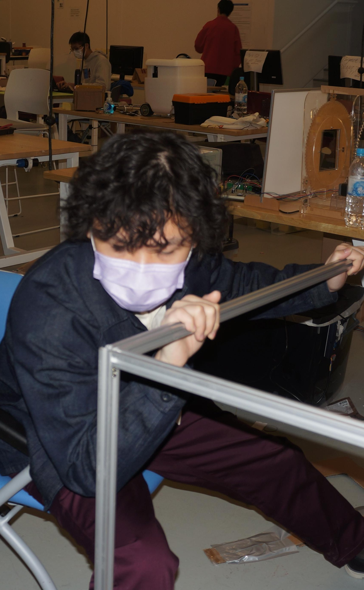
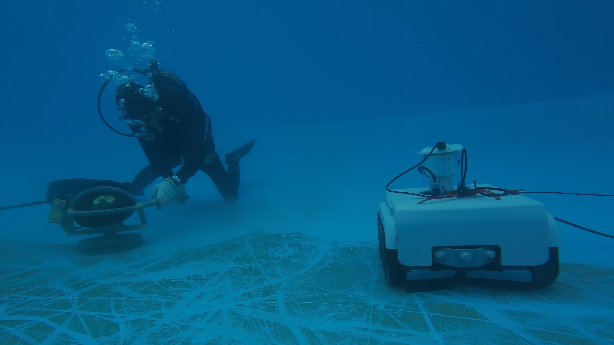

Consumer Electronics | 2026
Blōg
A real time dog monitoring system for you to see when you cannot and act when you should.
CAD Modeling · Manufacturing · Design

About me
Mechanical engineer with hands-on project experience and strong problem-solving skills.
Product designer focused on transforming user needs into manufacturable products.
Team player committed to bridging creativity and engineering for effective outcomes.
Past projects
Consumer Electronics | 2026
A real time dog monitoring system for you to see when you cannot and act when you should.
CAD Modeling · Manufacturing · Design

Underwater Robotics | 2025
An underwater cleaning robot that removes algae and debris in tanks.
CAD Modeling · Manufacturing · Design
CONTACT
I’m always open to new ideas and ambitious collaborations. Don't hesitate to contact me.